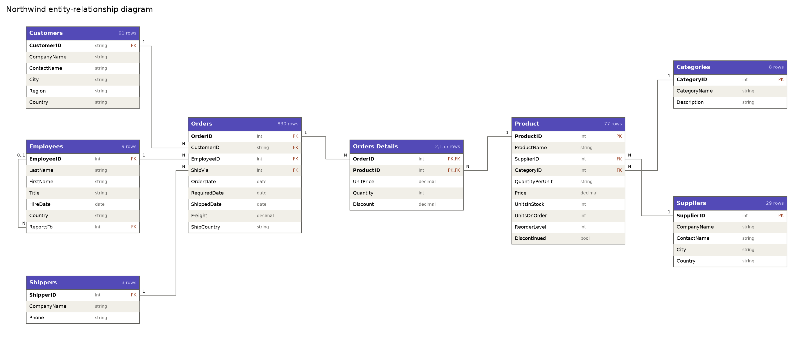
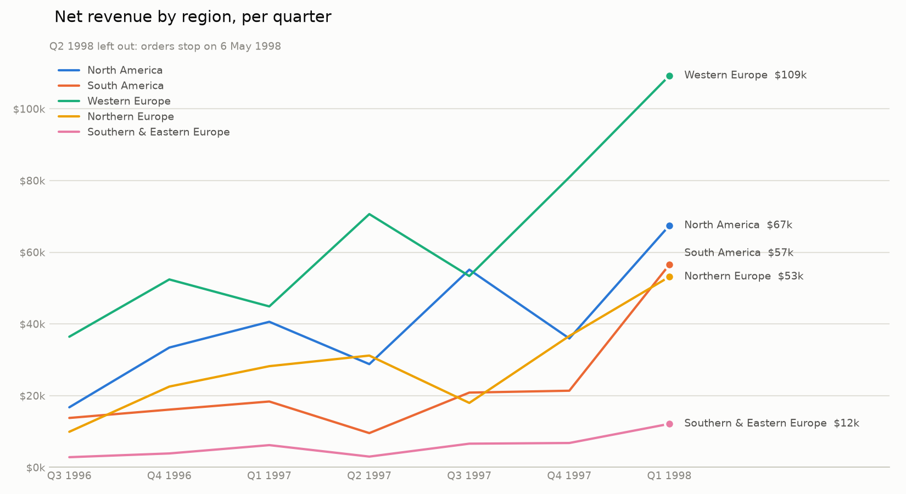
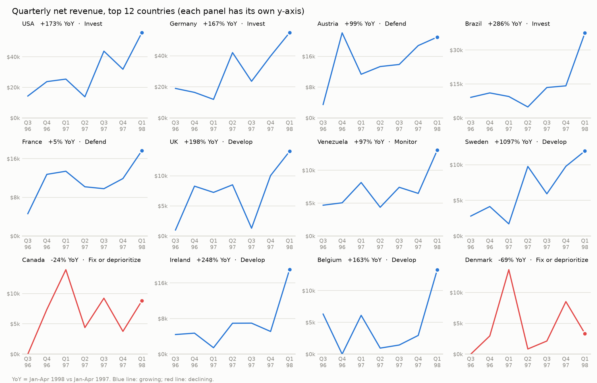
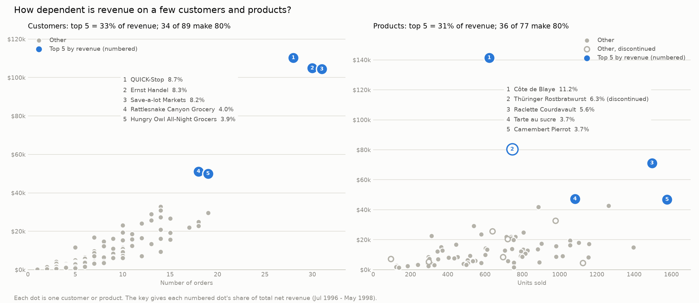
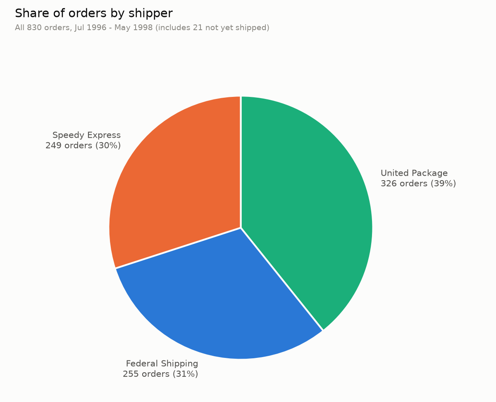
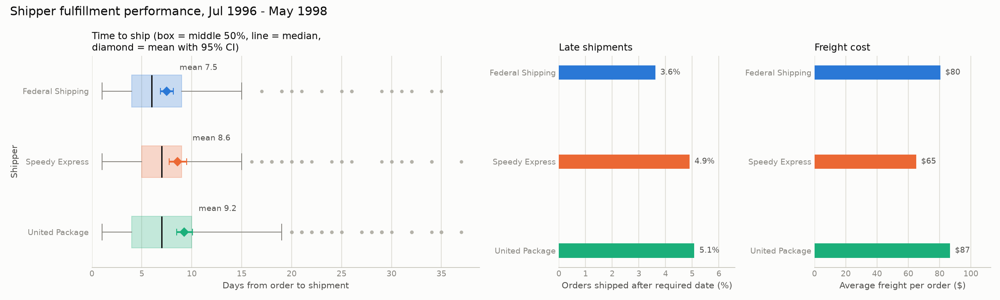
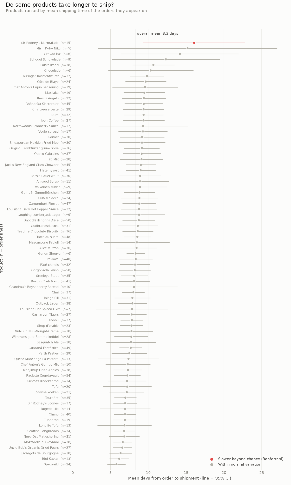

Advisory brief · NW-1998-05Data through 6 May 1998
Northwind Traders: what the order books say
Northwind Traders is a specialty food importer and distributor. It buys gourmet products from 29 suppliers in 16 countries and resells them to grocers, delis and restaurants across Europe and the Americas. This brief reads 22 months of its sales records and answers three questions a new manager should ask first: where the business is growing, how exposed it is to a few accounts, and how well it delivers.
Prepared forNorthwind management
SourceNorthwind Database.xlsx, 8 tables
Period4 Jul 1996 to 6 May 1998
Methodnorthwind_analysis.py (Python, pandas)
The organization
A mid-sized importer with a broad but top-heavy book
$1.27Mnet revenue after $89K of discounts
830orders, 2,155 order lines
89buying customers in 21 countries
77products in 8 categories; 8 discontinued
9employees in sales, in the USA and UK
3shipping carriers
Sales grew quickly over the period. Net revenue was $208K in the second half of 1996, $617K in 1997, and already $441K in the first four months of 1998. Beverages ($268K) and dairy ($235K) are the largest categories. The average order is worth about $1,525, but the median is $943, so a few large orders lift the average.
The records form a standard sales database. Every order line ties an order to a product; each order ties to a customer, a sales employee and a shipper; each product ties to a category and a supplier. We checked that every link is valid, so totals can be trusted across tables.

Figure 0 · Data modelHow the eight tables connect. Orders Details is the center: one row per product on an order. The 1-to-N labels show that one customer, employee or shipper has many orders.
QUESTION 1 OF 3
Which countries or regions are growing or declining, and where should efforts be focused?
Every region grew, but not every country. The USA, Germany and Brazil are large and growing faster than the company. France has stalled, and five smaller markets are shrinking.
Why it matters
Sales time, credit and marketing budget are limited. Putting them where demand is already rising pays back faster than defending markets that are drifting away. A manager also needs to know which large markets are slowing before the slowdown shows up in the annual total.
Analytical approach
The data starts in July 1996 and stops on 6 May 1998, so calendar years are not comparable. We compared the same months across years: Jan to Apr 1998 against Jan to Apr 1997, with H2 1997 against H2 1996 as a second check.
Countries are grouped into five regions by ship-to address.
Each country is placed in a segment by size (5% of revenue or more is "large") and by whether it grew faster than the company's +121%.

Figure 1.1 · Quarterly revenue by regionAll five regions end at their highest quarter. Q2 1998 is left out because orders stop on 6 May.

Figure 1.2 · Top 12 countriesEach panel has its own scale, so compare shapes rather than heights. The title of each panel gives the Jan to Apr growth and the segment. Red marks a country that declined.
Segment
Countries (Jan–Apr growth, share of revenue)
Invest
USA +173% (19%), Germany +167% (18%), Brazil +286% (8%)
Defend
Austria +99% (10%), France +5% (6%)
Develop
UK +198%, Ireland +248%, Belgium +163%, Sweden, Spain, Italy and other small markets
Monitor
Venezuela +97%, Switzerland +96%
Fix or deprioritize
Canada −24%, Denmark −69%, Finland −45%, Mexico −44%, Portugal −18%
Main finding
Western Europe is 40% of revenue and doubled (+108%). South America (+211%) and Southern and Eastern Europe (+213%) grew fastest.
The USA, Germany and Brazil make up 46% of revenue and are still accelerating.
France is a top-five market but grew only 5%.
Mexico and Portugal declined in both comparisons. Canada and Denmark fell after a strong early 1997.
Business implication
Put most new sales effort into the USA, Germany and Brazil.
Find out why France stalled before it starts to shrink.
Treat the UK and Ireland as the next growth markets; both grow fast on real volume.
Review Canada and Denmark account by account; one or two lost customers may explain the drop.
Read growth rates for small markets such as Sweden (+1,097% from $1.7K) as signals, not trends.
QUESTION 2 OF 3
How dependent is revenue on a few customers or products, and what happens if one leaves?
Revenue is broadly spread, but the top is steep. Five customers bring in a third of revenue, and losing any one of the top three would cost about 8%. The biggest single exposure is one wine, Côte de Blaye, at 11%.
Why it matters
A distributor that leans on a few large accounts or one star product can lose a big share of its income through one lost contract or one supply problem. Knowing the size of that exposure tells management where key-account care, supply contracts and backup products are worth the cost.
Analytical approach
Revenue share of the top 1, 5 and 10 customers and products, and how many it takes to reach 50% and 80% of revenue.
The Herfindahl-Hirschman Index (HHI), a standard concentration score from 0 to 10,000. Below 1,500 counts as unconcentrated.
What-if scenarios that remove each top customer or product and measure the revenue lost. These are first-order: they assume no buyer switches products and no lost customer is replaced.

Figure 2.1 · Revenue against volumeEach dot is a customer (left) or a product (right). The numbered blue dots are the top five by revenue. Hollow dots are discontinued products.
If this customer leaves
Revenue drop
QUICK-Stop
−8.7%
Ernst Handel
−8.3%
Save-a-lot Markets
−8.2%
Rattlesnake Canyon Grocery
−4.0%
Hungry Owl All-Night Grocers
−3.9%
All top 5 together
−33.2%
If this product is lost
Revenue drop
Côte de Blaye
−11.2%
Thüringer Rostbratwurst (discontinued)
−6.3%
Raclette Courdavault
−5.6%
Tarte au sucre
−3.7%
Camembert Pierrot
−3.7%
All top 5 together
−30.6%
Main finding
HHI is about 330 for both customers and products, so no single account dominates. Still, 13 of 89 customers make up half of revenue.
The top five customers are all active; each ordered within 22 days of the last date in the data.
Discontinued products already account for 14.6% of past revenue, including the #2 product. Part of the product risk has already happened.
Côte de Blaye is bought by 19 customers and no buyer takes more than 16% of it, so losing one customer would not take this product down with it.
Business implication
Assign named account managers to QUICK-Stop, Ernst Handel and Save-a-lot. Together they are a quarter of revenue.
Secure Côte de Blaye's supply with a longer contract or a second source. It is the largest single point of failure.
Plan replacements for the discontinued meat lines. Thüringer Rostbratwurst was Save-a-lot's biggest product.
Grow the middle of the customer base so no single exit costs more than 5%.
QUESTION 3 OF 3
How do the shippers compare on fulfillment, and do any products take longer to ship?
Federal Shipping is fastest; United Package is slowest and carries the most orders. Products ship in about the same time, with one exception: Sir Rodney's Marmalade.
Why it matters
For a food distributor, delivery speed is part of the product. Slow or late orders hurt freshness, customer trust and repeat business. Carrier choice also drives freight cost. If certain products are always slow, the cause is usually upstream, in stock levels or a supplier.
Analytical approach
Days to ship = order date to shipped date. An order is late if it shipped after its required date.
For each shipper: mean, median and 90th-percentile days, share shipped within 7 days, late rate, unshipped orders and freight. Bootstrap 95% confidence intervals show whether gaps are real.
For each product: average days to ship of the orders it appears on, tested against the overall average. With 77 products, about 4 would look unusual by chance, so we applied a Bonferroni correction (|z| ≥ 3.41).

Figure 3.1 · Share of orders by shipperUnited Package handles the largest share of orders.
Federal
Speedy
United
Mean days to ship
7.5
8.6
9.2
95% CI of mean
6.8–8.2
7.7–9.5
8.5–10.1
Median / 90th pct
6 / 12
7 / 18
7 / 22
Shipped within 7 days
63%
58%
55%
Shipped late
3.6%
4.9%
5.1%
Never shipped
6
4
11
Avg freight per order
$80
$65
$87

Figure 3.2 · Shipper performanceLeft: spread of days to ship; the diamond is the mean with its 95% confidence interval. Middle: share of orders shipped late. Right: average freight per order.

Figure 3.3 · Days to ship by productEach dot is a product's average, with a line for its 95% confidence interval. Most intervals cross the overall average of 8.3 days. Products with few orders have wide intervals and cannot be judged.
Main finding
Federal Shipping leads on every speed measure. Its confidence interval does not overlap United Package's, so the gap is very unlikely to be chance.
United Package carries 39% of orders but has the slowest average, a long tail (1 in 10 orders takes 22+ days), the most unshipped orders and the highest freight.
Late shipments are rare for all three (under 5.1%) because most orders allow 28 days. Speed is where they differ.
Only Sir Rodney's Marmalade ships slower than chance would explain: 16.1 days on average against 8.3. Its median is 9 days, so a few very slow orders drive the result.
Business implication
Move volume from United Package to Federal Shipping, or renegotiate United's service level.
Use Speedy Express where cost matters more than speed; it is about $15 cheaper per order.
Follow up the 21 orders that never shipped, 11 of them with United Package.
Check stock and supplier lead times for Sir Rodney's Marmalade. Products in general do not need special handling.
Summary
Five priorities for the next quarter
Back the winners. Focus sales effort on the USA, Germany and Brazil, and build the UK and Ireland as the next markets.
Protect the top accounts. Give QUICK-Stop, Ernst Handel and Save-a-lot named account managers.
Secure Côte de Blaye. Lock in supply for the product behind 11% of revenue.
Rebalance carriers. Shift orders from United Package to Federal Shipping and clear the 21 unshipped orders.
Investigate the soft spots. France's stall, the decline in Canada, Denmark, Mexico and Portugal, and replacements for discontinued lines.